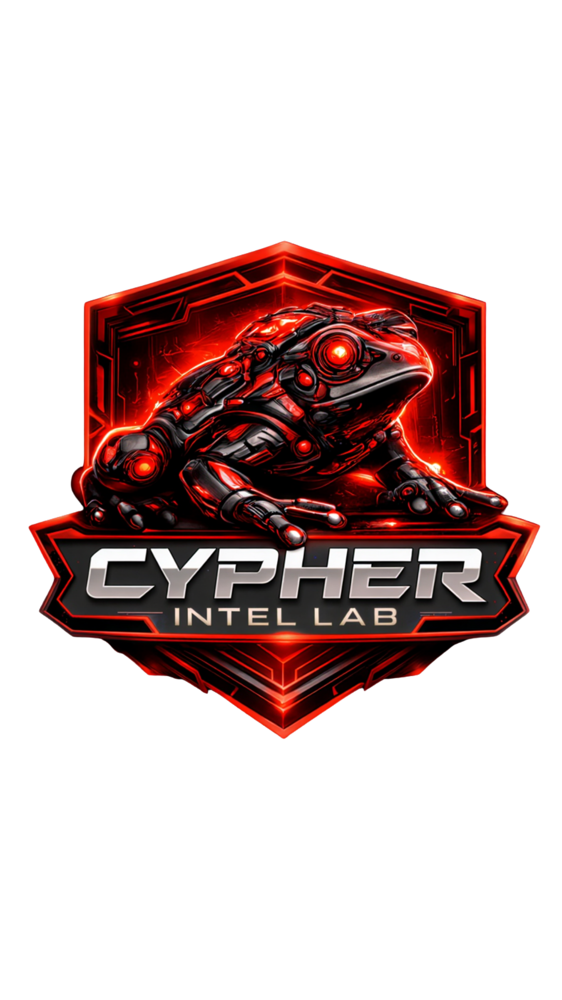

Cypher Intel Lab
Cypher Intel Lab está diseñado para quienes necesitan investigar y decidir con seguridad en entornos donde el tiempo y la fiabilidad lo son todo: una formación que lleva al alumno desde un punto de partida mínimo hasta una visión completa del trabajo operativo, integrando OPSEC para proteger al operador, búsqueda avanzada para encontrar información con precisión y creación de avatares digitales coherentes para sostener operaciones sin improvisación; a lo largo del recorrido incorpora Virtual HUMINT para leer comportamiento y contexto en plataformas, SOCMINT para entender redes, vínculos y narrativas, y un enfoque móvil con apps OSINT para validar y capturar evidencias en escenarios ágiles, culminando en investigación de huella digital con normalización, correlación multifuente, detección de patrones, construcción de hipótesis y un informe técnico defendible y accionable: menos teoría dispersa y más método, una formación integral para convertir señales sueltas en inteligencia útil, clara y lista para actuar.